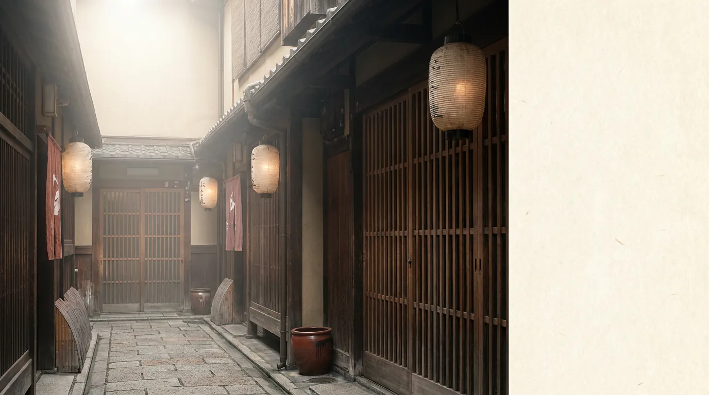
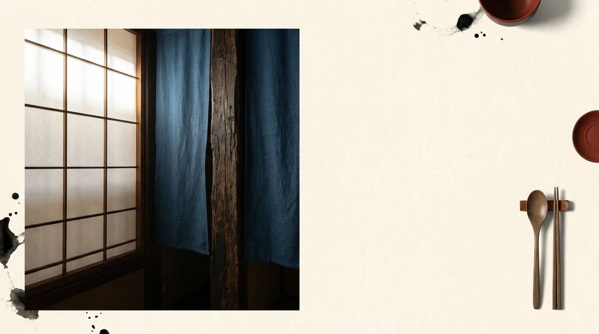

SAKETTO
AXIS 03 — REGION
— BY REGION
地域から、探す。
クラフトサケは復興と再生の文脈と深く結びついている。福島・宮城・岩手といった東北、首都圏の都市型、関西の団地酒蔵、九州・沖縄の南国素材まで、28蔵が日本列島に散らばる。
クラフトサケの蔵は、その土地の事情と切り離せない。震災からの再生を懸けて立ち上がった東北の蔵があり、駅ナカや街なかで醸す都市型の醸造所があり、南の島では地元の素材を仕込みに使う蔵が生まれている。同じ「米と麹の酒」でも、土地が変われば動機も素材も変わる——そこがこのジャンルの面白さだ。旅先や出身地、いつか行ってみたい町。縁のある地域から選べば、一本の酒がその地域の物語への入口になる。気に入った蔵が見つかったら、ふるさと納税で応援するという選び方もある。




— 拡張予定
北海道 / 中国 / 四国 は現時点で新興クラフトサケ醸造所の確認が取れていません。Phase 2 で発掘予定。
北海道 / 中国 / 四国 は現時点で新興クラフトサケ醸造所の確認が取れていません。Phase 2 で発掘予定。